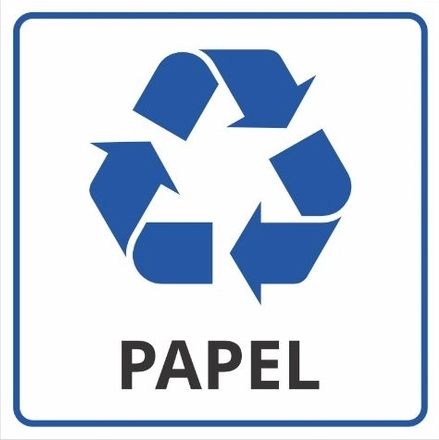
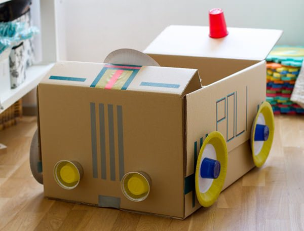

Introdução:
Esse site faz parte de um projeto escolar! cuja finalidade é
incentivar e também mostrar como e quais materiais
podem ou não serem reutilizados/reciclados.
Reconhecendo a importância da conscientização ambiental, buscamos fornecer informações claras e acessíveis para que todas as
pessoas possam tomar decisões informadas sobre o descarte correto de
resíduos e contribuir com a preservação do meio ambiente.
Materiais Que Podem Ser Reciclados:
Nem todos os materiais podem ser reciclados, mas neste primeiro
momento iremos ver quais podem e devem ser
reciclados. Abaixo segue a lista desses materiais:
-
Azul - Papel e
Papelão
-
Vermelho
- Plástico
-
Verde - Vidro
-
Amarelo - Metais
-
Marrom
- Resíduos Orgânicos
- Preto - Madeira
Como Podemos Reciclar o Papel e Papelão?
O processo de reciclagem de papel e papelão envolve várias etapas
importantes. Primeiro, os materiais são coletados e triados para
remover contaminantes, como plásticos e metais. Em seguida, eles são
picados em pequenos pedaços e misturados com água para formar uma
polpa. Depois, a polpa é limpa para remover qualquer resíduo restante,
incluindo tintas e outros materiais. O branqueamento é então realizado
para remover qualquer cor restante e deixar o papel branco. A polpa
branqueada é misturada com água fresca e colocada em uma máquina de
formação de folhas, onde é criado o novo papel ou papelão. Por fim, as
folhas são secas, cortadas e embaladas para serem vendidas como
produtos de papel reciclado. O processo de reciclagem de papel e
papelão é uma forma importante de reduzir a quantidade de resíduos que
vão para os aterros sanitários e de economizar recursos naturais,
enquanto também reduz a poluição do ar e da água associada à produção
de papel a partir de fibras virgens.

Tempo de Decomposição do Papel e do Papelão:
O tempo que o papel e o papelão levam para se decompor depende de
vários fatores, como a espessura do material e as condições ambientais
em que é descartado. Em condições ideais de compostagem, onde há
umidade, oxigênio e microorganismos presentes, o papel e o papelão
podem levar cerca de 2 a 6 semanas para se decompor completamente. No
entanto, em condições menos favoráveis, como em aterros sanitários
onde o material pode ficar compactado e sem acesso à luz e ar, o tempo
de decomposição pode ser muito maior, podendo levar de meses a anos.
Portanto, é importante incentivar a reciclagem de papel e papelão
sempre que possível para evitar que esses materiais se acumulem em
aterros sanitários e demorem a se decompor.
Como Podemos Reutilizar o Papel e o Papelão?
Existem várias formas de reutilizar papel e papelão, ajudando a
reduzir o volume de resíduos gerados e a preservar o meio ambiente.
Algumas opções incluem fazer blocos de anotações com papéis usados,
utilizar caixas e papelão para embalar objetos, criar artesanatos,
envelopar presentes e compostar. Antes de reutilizar, é importante
verificar se o papel ou papelão estão limpos e em bom estado.
O ideal é evitar o desperdício desde o início, utilizando os dois
lados do papel sempre que possível e fazendo a impressão apenas quando
necessário.Exemplo de um brinquedo
feito com materiais reutilizados:
